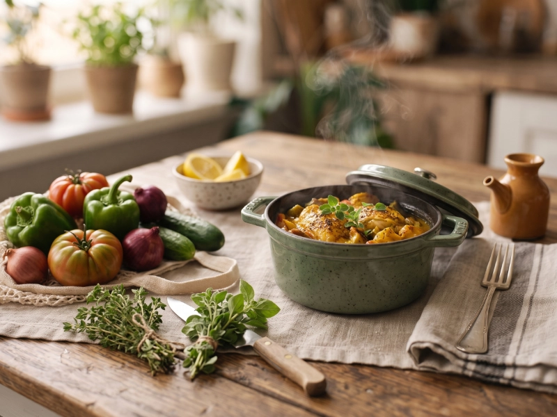

Обід ★ 4,8 з 5
Борщ класичний
Насичений борщ на яловичому бульйоні з буряком, капустою та картоплею.
Знаходьте страви за назвою, категорією або інгредієнтами, які вже є вдома. Зберігайте улюблене та діліться власними рецептами.

Обід ★ 4,8 з 5
Насичений борщ на яловичому бульйоні з буряком, капустою та картоплею.


Введіть два-три продукти, і SmakHub покаже страви, які з них можна приготувати.
Відфільтруйте результати за часом приготування, складністю та категорією.
Дійте за покроковою інструкцією, а вдалі рецепти додавайте в «Улюблене».
Ще не маєте акаунта? Зареєструйтеся або увійдіть.